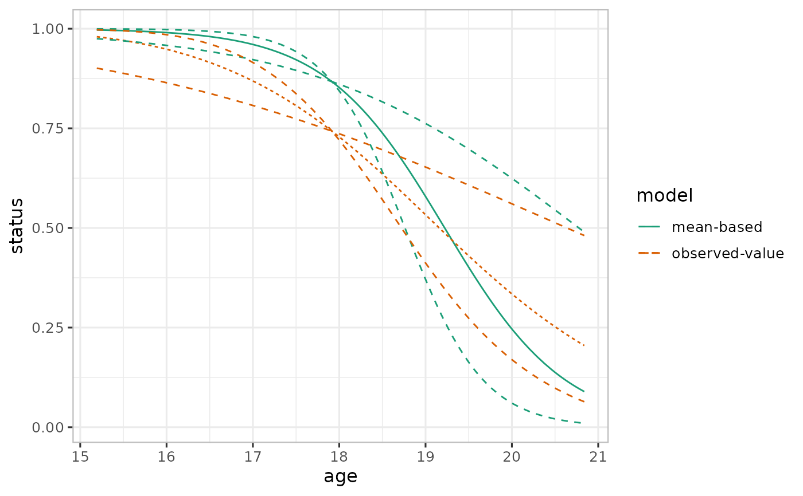

Prediction and effect estimates
varpred.RdComputes central estimates, prediction and effect estimates for a particular focal predictor.
Usage
varpred(
mod,
focal_predictors,
x.var = NULL,
type = c("response", "link"),
isolate = TRUE,
isolate.value = NULL,
level = 0.95,
steps = 100,
at = list(),
dfspec = 100,
true.beta = NULL,
vcov. = NULL,
internal = FALSE,
input_vars = FALSE,
avefun = mean,
offset = NULL,
bias.adjust = c("none", "taylor", "observed"),
sigma = NULL,
include.re = FALSE,
modelname = NULL,
returnall = FALSE
)Arguments
- mod
fitted model object. See details for supported class of models.
- focal_predictors
a character vector of one or more predictors. For a model with an interaction, the interacting variables are specified as a vector, for example
~x1*x2will bec("x1", "x2"). If no interactions are present in the model, specifying a vector of variables compares predictions between them.- x.var
a character specifying the predictor to define the x variable (horizontal axis on the plot). The default is
NULL, of which the first predictor infocal_predictorsis used. Ignored if there is a singlefocal_predictors.- type
a character specifying the desired prediction.
type = "response"applies inverse transformation of the link functions, if exists.type = "link"requests the results as a linear predictor.- isolate
logical. If
TRUE(default), computes effect estimates otherwise it computes prediction estimates. See details.- isolate.value
numeric (default
isolate.value = NULL). Ifisolate = TRUE, otherwise ignored, is the value to use as the anchor. The default value, computed internally, is the average of the linear predictor(s) corresponding to focal predictors.- level
desired confidence interval for computing the confidence intervals. Default is
0.95.- steps
number of points to evaluate numerical predictors in
focal_predictors. The default is100. Increase for smooth curves. Unique levels offocal_predictorsare used in the case categorical predictors.- at
default
NULL. Otherwise, is a namedlistspecifying points to evaluatefocal_predictors. The names in the list should match the names used infocal_predictors. IfNULL, the levels are internally generated using quantile, seequantile.- dfspec
default
100. Specified degrees of freedom for a model which do not returndf. This is used in computation of confidence intervals.- true.beta
default
NULL. If specified, used as model coefficient estimates and should be in the same order as the vector of coefficients from the model object. Useful when comparing model estimates to the "truth" (simulation values).- vcov.
a function or a matrix. If a function, it is used to compute the variance-covariance matrix of the model coefficients. The function should take the model as it's first (or maybe only) argument. A matrix of variance-covariance matrix of the estimated coefficient can also be used. Otherwise
vcov(mod)is used internally. Customizedvcov.can be used to generate effect estimates if the columns corresponding to the non-focal predictors are all zero. However, with this approach, the predictors should be properly scaled. See examples.- internal
logical. If
TRUE, the entries of the non-focal predictor (see x.var) in the variance-covariance matrix are internally zeroed-out usingzero_vcov. Default isFALSE.- input_vars
logical. If
TRUE, package input variables are averaged otherwise linear predictor variables. See examples in vignette.- avefun
the averaging scheme (function) to be used in generating reference point for non-focal predictors. Default is
mean.- offset
a function or a value.
- bias.adjust
specifies the bias correction method. If "none" (default), no bias correction method is applied; if "taylor", second-order Taylor approximation is used; if "observed", all the values of non-focal predictors are used. See details and examples.
- sigma
standard deviation used if
bias.adjust="taylor". IfNULL(default),sigmaorVarCorris used.- include.re
logical. Default is
FALSE. IfTRUE, the random effects components of mixed models is included.- modelname
character string naming
varpredobjects. Useful when comparing several objects.- returnall
logical. If
TRUE, all other named computed quantities are also returned.
Details
The central estimates (often called effect or prediction) describe how the fitted model responds to the changes in the focal predictor. The other associated quantities are the prediction and effect estimates:
prediction estimates: incorporate all the sources of uncertainty in the model. Important if our goal is to do prediction.
effect estimates: incorporate uncertainty due to focal predictor only. Focus on visualizing the effect of the focal predictor.
The default approaches to compute these quantities involves averaging the non-focal linear predictors (columns of model.matrix corresponding to non-focal predictors) -- mean-based approach. An alternative is the observed-value-based approach which computes the estimates over the entire population of the non-focal predictors and then averages them over the levels of the focal predictors. The later approach is more appropriate for a model involving non-linear link function with non-focal predictors and/or random effects. See vignette("vapred_intro", package="varpred")) for more details.
The current version supports:
lm and glm
lme4
glmmTMB
rstanarm
objects.
Examples
# Set theme for ggplot. Comment out if not needed
library(ggplot2)
varpredtheme()
set.seed(911)
# Simulate binary outcome data with two predictors
steps <- 500
N <- 100
b0 <- 2
b_age <- -1.5
b_income <- 1.8
min_age <- 18
age <- min_age + rnorm(N, 0, 1)
min_income <- 15
income <- min_income + rnorm(N, 0, 1)
eta <- b0 + age*b_age + income*b_income
status <- rbinom(N, 1, plogis(eta))
df <- data.frame(status, age, income)
# Fit model
mod <- glm(status ~ age + income, df, family=binomial())
# Effect plots
## Mean-based
ef_mean <- varpred(mod, "age", steps=steps, bias.adjust="none", modelname="mean-based")
## Observed-value-based
ef_observed <- varpred(mod, "age", steps=steps, bias.adjust="observed", modelname="observed-value")
## Combine all the effect estimates
ef <- combinevarpred(list(ef_mean, ef_observed))
print(plot(ef)
+ scale_color_brewer(palette = "Dark2")
)
#> Scale for 'colour' is already present. Adding another scale for 'colour',
#> which will replace the existing scale.

# Prediction plots
## Mean-based
pred_mean <- varpred(mod, "age", isolate=FALSE
, steps=steps, bias.adjust="none"
, modelname="mean-based"
)
## Observed-value-based
pred_observed <- varpred(mod, "age", isolate=FALSE
, steps=steps, bias.adjust="observed"
, modelname="observed-value"
)
## Combine all the prediction estimates
### With plotit=TRUE no need to plot
pred <- combinevarpred(list(pred_mean, pred_observed), plotit=TRUE)
print(pred
+ scale_color_brewer(palette = "Dark2")
)
#> Scale for 'colour' is already present. Adding another scale for 'colour',
#> which will replace the existing scale.